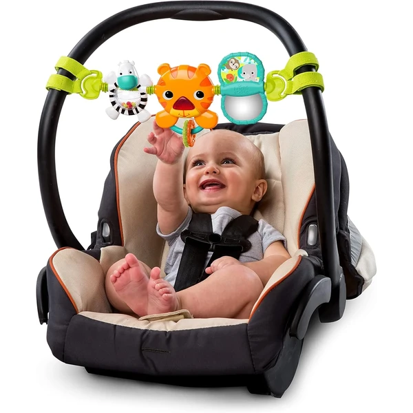
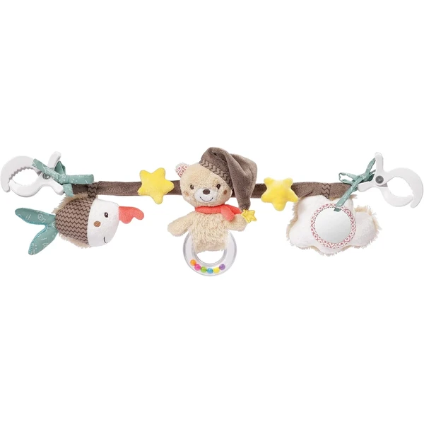
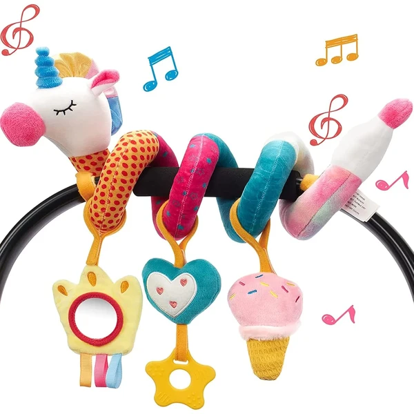
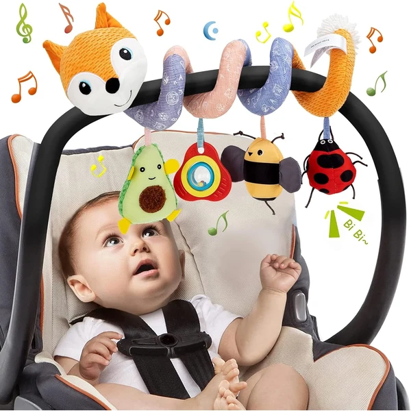
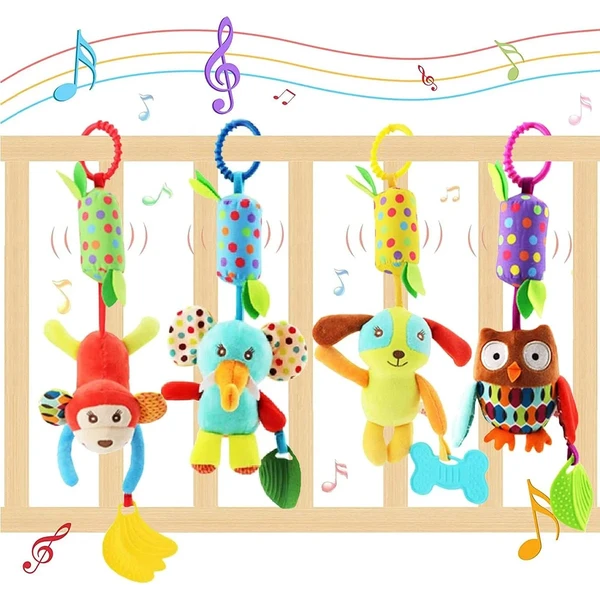
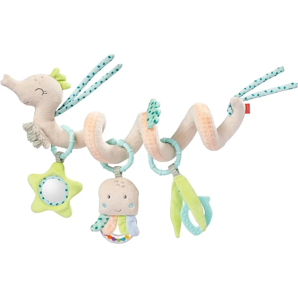
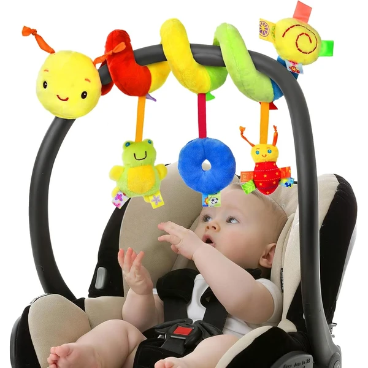
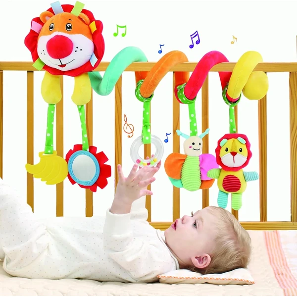

Los juguetes espiral siguen siendo prácticos entre los 6 y los 12 meses, ahora que el bebé ya agarra con más precisión y quiere manipular lo que ve. Enganchados al cochecito, la trona o la cuna, ofrecen colores, texturas y sonidos que mantienen su atención durante el paseo o la comida. En esta selección encontrarás espirales pensados para esta edad.
¿Qué aportan los juguetes espiral?
Un juguete sencillo que sigue entreteniendo al bebé mientras perfecciona su agarre y su coordinación.
- Motricidad fina
- Coordinación mano-ojo
- Estimulación visual
- Estimulación táctil
- Curiosidad
- Entretenimiento

Bright Starts Take Along
Una barra de actividades musical que se sujeta con correas al cochecito o a la silla del coche, con un tigre que se ilumina y suena al apretarlo. Incluye una bola giratoria, un espejo y un sujetador de cuentas de colores.
⭐ ¿Por qué nos gusta?
- ✔ Tigre luminoso con 4 melodías al apretarlo.
- ✔ Espejo giratorio para el autodescubrimiento.
- ✔ Correas fáciles de sujetar a cochecito o silla.
💬 Lo que más destacan las familias
Muchos padres destacan lo fácil que resulta sujetarla a distintos cochecitos y sillas de coche, gracias a sus correas ajustables. El tigre luminoso también se valora porque capta la atención del bebé enseguida.
Ver en Amazon

Fehn Cadena Cochecito Bruno
Una cadena de colgantes con colores vivos y texturas variadas que se fija con dos ganchos al cochecito, la silla de coche o la cuna. Incluye un pez que chirría, un oso con sonajero y una nube con espejo.
⭐ ¿Por qué nos gusta?
- ✔ Dos ganchos, se fija fácilmente a cochecito o cuna.
- ✔ Combina texturas, sonidos y un espejo.
- ✔ Fomenta la coordinación ojo-mano desde recién nacido.
💬 Lo que más destacan las familias
Se repite bastante el comentario de que los colgantes se balancean con facilidad y llaman mucho la atención del bebé desde los primeros meses. La longitud de la cadena también se valora porque se adapta a distintos cochecitos.
Ver en Amazon

hahaland Colgantes para Cochecito
Un juguete espiral con velcro que se estira y se adapta al cochecito, la cuna o el gimnasio de actividades, con tres colgantes de peluche desmontables. Cada colgante incluye espejo, sonajero o mordedor de silicona.
⭐ ¿Por qué nos gusta?
- ✔ Velcro ajustable, se adapta a cochecito, cuna o gimnasio.
- ✔ 3 colgantes desmontables: espejo, sonajero y mordedor.
- ✔ Colores vivos que estimulan la vista del bebé.
💬 Lo que más destacan las familias
Lo que más suele gustar es que los tres colgantes se puedan separar y usar por su cuenta, así el bebé no se cansa siempre del mismo. El velcro también se valora porque sujeta bien sin resbalar.
Ver en Amazon

Funsland Espiral Musical
Un juguete espiral con animales de colores y varios colgantes, incluida una caja de música y un papel que cruje. Se fija fácilmente al cochecito, la cuna o la silla de coche.
⭐ ¿Por qué nos gusta?
- ✔ Incluye caja de música y papel que cruje.
- ✔ Se fija fácilmente a cochecito, cuna o silla.
- ✔ Colores vivos que estimulan la vista del bebé.
💬 Lo que más destacan las familias
Muchos padres valoran que combine varios estímulos en un solo juguete, como la música y los sonidos crujientes. También se comenta que es fácil de limpiar con un paño húmedo.
Ver en Amazon

EVANCE Sonajeros Colgantes 4 piezas
Un set de 4 sonajeros de peluche con forma de animal, cada uno con un mordedor incorporado, pensados para colgar del cochecito o la cuna. Los colores vivos y los sonidos suaves estimulan la vista y el oído del bebé.
⭐ ¿Por qué nos gusta?
- ✔ Set de 4 sonajeros con distintos animales.
- ✔ Cada uno incluye un mordedor para las encías.
- ✔ Enganche de anillo, fácil de colgar en varios sitios.
💬 Lo que más destacan las familias
Entre los comentarios más habituales aparece lo práctico que resulta tener varios sonajeros distintos para ir cambiando. El mordedor incorporado en cada uno también se valora durante la salida de los dientes.
Ver en Amazon

Fehn Espiral Caballito de Mar
Un juguete espiral con forma de caballito de mar que combina anillo sonajero, chirriador, papel crujiente, espejo y mordedor blando en un mismo colgante. Se fija con facilidad al cochecito, la silla de coche o la cuna.
⭐ ¿Por qué nos gusta?
- ✔ Combina 5 texturas y sonidos distintos.
- ✔ Se lava fácilmente hasta 30 grados.
- ✔ Diseño compacto, fácil de llevar de viaje.
💬 Lo que más destacan las familias
Una característica muy mencionada es la variedad de estímulos que reúne en un solo colgante, sin necesitar varios juguetes distintos. El tamaño compacto también se valora para llevarlo a cualquier parte.
Ver en Amazon

Vicloon Espiral Cabeza de Abeja
Un juguete espiral con forma de abeja y varios colgantes sonoros que se enrosca con facilidad en el cochecito, la cuna o la silla de coche. El sonido se activa al presionar la parte superior del animal.
⭐ ¿Por qué nos gusta?
- ✔ Sonido interactivo al presionar la cabeza del animal.
- ✔ Colgantes adicionales para ejercitar el agarre.
- ✔ Fácil de enroscar en distintos lugares.
💬 Lo que más destacan las familias
Muchos padres destacan lo versátil que resulta para usar tanto en el cochecito como en el asiento del coche. El diseño colorido también se valora porque llama mucho la atención del bebé.
Ver en Amazon

BelleStyle Espiral León
Un juguete espiral de peluche con forma de león que incluye 5 colgantes distintos: un mordedor de plátano, un espejo, una campana, una abeja con sonido y el propio león con un timbre relajante.
⭐ ¿Por qué nos gusta?
- ✔ 5 colgantes distintos en un mismo juguete.
- ✔ Incluye mordedor de plátano para las encías.
- ✔ Se adapta a cochecito, cuna o silla de coche.
💬 Lo que más destacan las familias
Lo que más suele gustar es la variedad de colgantes que trae, cada uno con una textura o sonido diferente. El mordedor de plátano también se valora especialmente durante la salida de los dientes.
Ver en Amazon